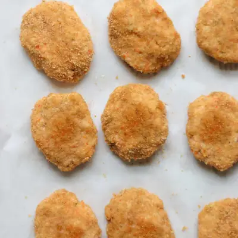

Healthy chicken nuggets with veggies

Ingredients
- 1 medium carrot (80g, weighed after peeled)
- 2 cups cauliflower (200g)
- 1 pound ground chicken
- 2 teaspoons Italian seasoning
- 1 teaspoon garlic powder
- 2/3 cup breadcrumbs (80g)
Steps
- Preheat oven to 375 degrees Fahrenheit. Add cauliflower and carrots to a food processor and process until finely chopped.
- In a large bowl, add all the ingredients, minus the breadcrumbs. Mix until combined. Scoop about 1 tablespoon of the mixture and using your hands, form into balls.
- Add breadcrumbs to a large raised plate or bowl. Roll in breadcrumbs. Flatten slightly into a nugget shape.
- Place on a parchment paper lined baking tray. Spray the top with oil spray to make the nuggets crispier (optional).
- Bake for 20-25 minutes, flipping halfway through.
Recipe by Min Kwon · Kidfriendly Meals, from MJ and Hungryman. Saved here for personal use; the original has the full notes, tips and photos. Open original